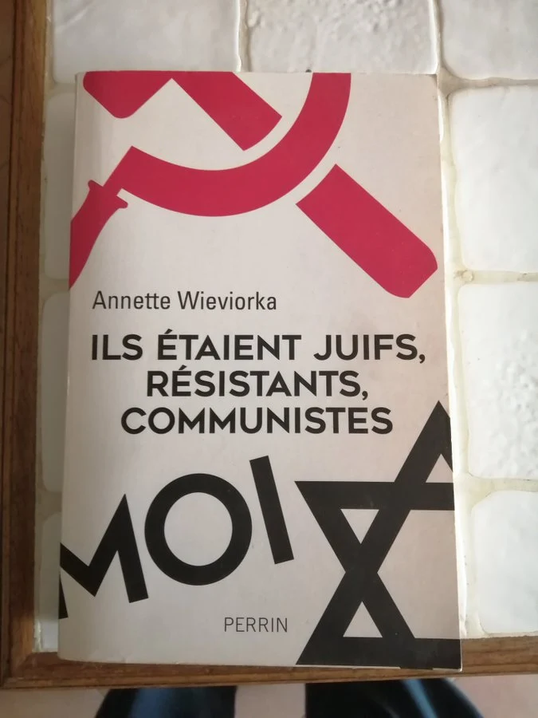

Publication sur X
Législatives 2024. Notre interpellation à Bastien Marchive
Date de publication sur X · 26 juin 2024
Texte de la publication sur X
Quel est votre choix
@B_Marchive
entre le RN antisémite et raciste depuis tjs et les valeurs du #nouveaufrontpopulaire qui défend les peuples opprimés quel que soit la religion, la couleur de peau, le genre ou le pays d'origine ? L'histoire du Front populaire est la nôtre.
@lfi79 https://t.co/SRfCaQUAiJ

Sources
PCF 79 · @79Parti sur X · AR-0005-TW-1805893600699363715
À lire aussi · Sénatoriales 2026. Le PCF 79 présente Frédéric Giraud et Valérie Mazé